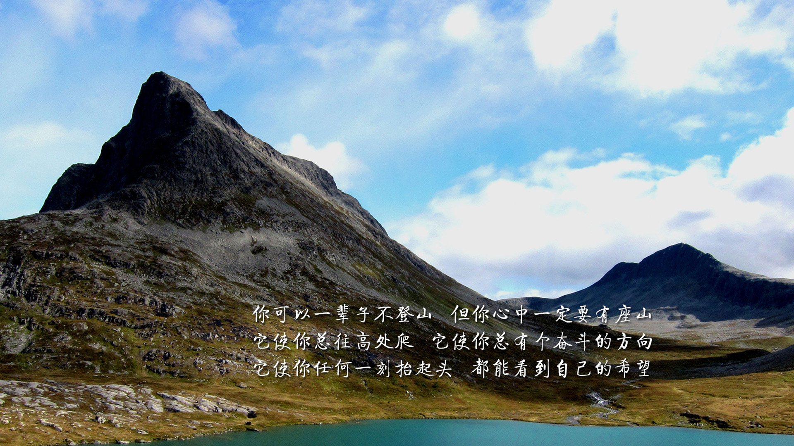
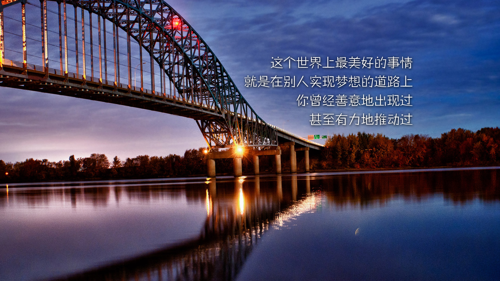
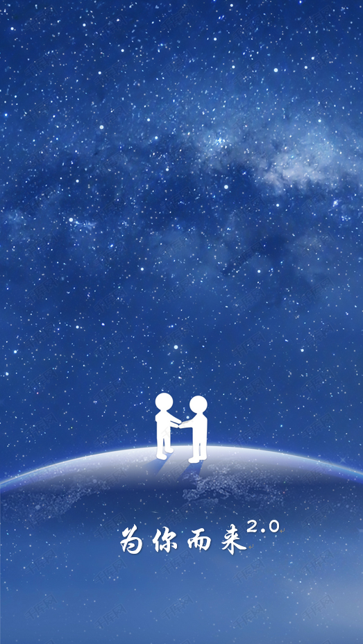

更新日志
-
2019-01-01
全新2.0版本，为你而来
 -
2018-10-31
1.更新“作品”栏，删除“下划线动画”作品（打包下载的源码里面仍然有此作品的源码，需要的小伙伴可以下载），增加“3D轮播图”、“紫色渐变登录页面”作品。
2.关于“紫色渐变动画”：登录按钮、输入框、第三方图标均有动画效果，登录框具有验证功能，输入合法显示绿色下划线，输入不合法显示红色下划线，无输入时显示灰色下划线，获取焦点时显示黑色下划线。
-
2018-10-15
1.在"联系我"一栏中加入了高德地图显示当前位置。
2.优化文件目录，提升了网页加载速度。
3.更新“作品”栏，加入“轮播图”、“随机选号器”作品。
4.改变作品详情页“下一页”跳转方式，到最后一个作品以后点击下一页将跳到第一个作品。
-
2018-10-06
1.手机端页面优化完毕，手机也可以访问本站啦。
2.手机端取消下载源码的功能（包括作品页的打包下载以及详情页的单个下载功能），需要下载源码的话请使用电脑访问。
3.重新对手机端“作品”部分进行排版。
4.在“联系我”界面单击我的QQ号可以直接跳转到QQ添加好友界面(仅限PC端),手机端可以识别二维码添加好友。
-
2018-10-03
1.更新“作品”栏，加入“js时钟”作品。
2.在每个作品的详情页都加入了“源码下载”按钮，现在可以下载对应作品的源码了。
3.改动“作品”栏的“友情提示”部分，在那里可以一次下载所有的源码了。
-
2018-09-22
1.暂时关闭手机端页面进行优化（重写设备宽度小于1200px的css代码)。
2.导航栏移除“相册”栏。
3.导航栏增加“更新日志”栏。
4.更新“更新日志”栏页面样式。
5.更换导航栏部分排列顺序。
6.更新“作品”栏，加入“简易计算器”作品。
-
2018-07
微信

技术支持
个人信息
- 电话：13653506769
- 邮箱：1443502059@qq.com
- 地址：武汉工程科技学院